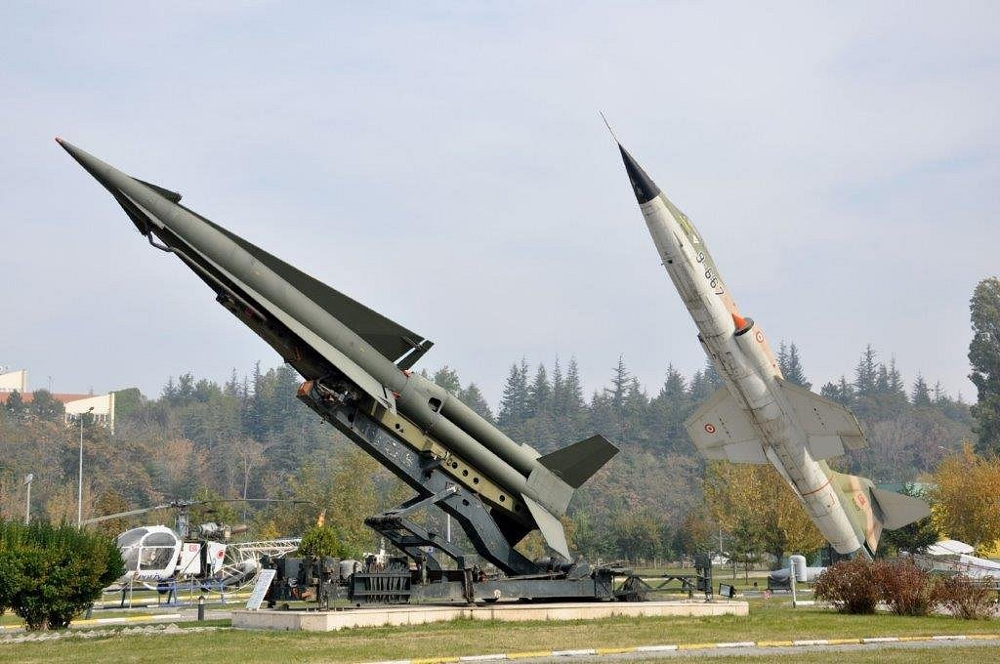
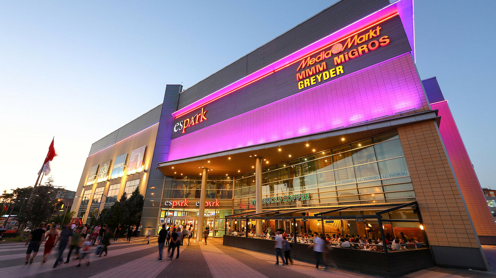
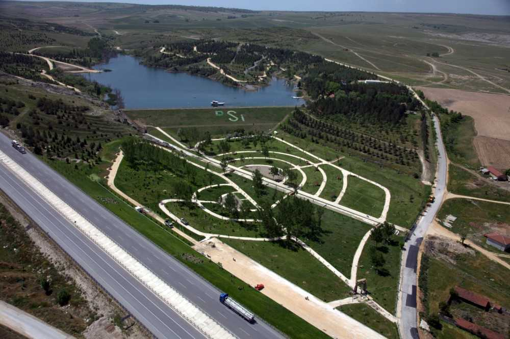
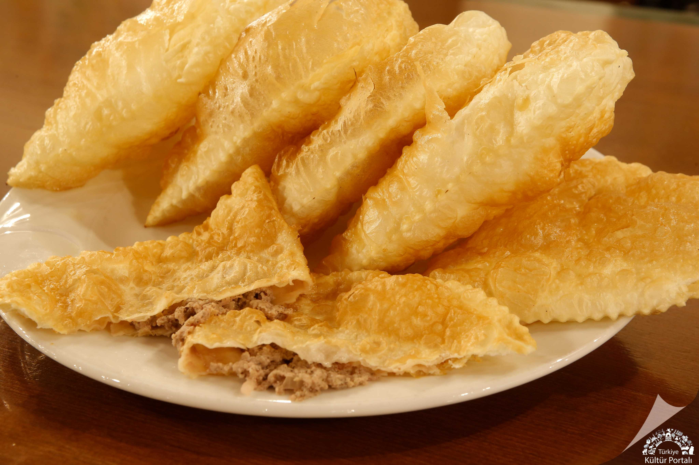

- Yılmaz Büyükerşen Balmumu Heykeller Müzesi
- Eti Arkeoloji Müzesi
- Cumhuriyet Tarihi Müzesi
- Hava Müzesi
- Demiryolları Müzesi
- Tülomsaş Müzesi
- ESOGÜ Zooloji Müzesi
Eskişehir
Tarihçesi:
Eskişehir Porsuk Çayı’nın içinden geçtiği düz bir arazide konumlanmıştır. M.Ö. 1460’larda Hititler’in burada bir yerleşim kurdukları düşünülmektedir. M.Ö 700’de yönetime gelen Frigyalılar ise, Dorylaeum’u kurmuşlar. Şehir ilerleyen yıllarda Romalıların ve Celtler’in kontrolüne geçmiş. Bir rivayete göre buraya ilk gelenler, kendilerine yerleşmek için uygun bölgeyi seçebilmek adına Porsuk Nehri’nin etrafında değişik yerlere koyun akciğeri ve karaciğeri asmışlar. Çürümeden en uzun süre dayanan ciğerin olduğu yeri seçmekmiş amaç. Yerleşim için belirlenen ilk en uygun bölge, günümüz Odunpazarı mevkii ve daha sonraları Dorylaeum şehri olan Sarhöyük olmuş. Eskişehir, Ortaçağ’a kadar Dorylaion ve Doryllaeum adlarıyla anılmış. Friglerin ardından sırasıyla Lidyalıların, Perslerin, Makedonların ve Romalıların egemenliği altına giren Eskişehir, 1074 yılında Selçukluların eline geçmiştir. O dönemde Sultanönü adıyla bilinen kent, mimari açıdan bir hayli gelişmiştir.
Bizans döneminde kentte üç önemli yerleşim alanı karşımıza çıkmaktadır. Bunlar Dorylaion denilen bölge, buranın 3 kilometre batısında, günümüzde Hamamyolu olarak bilinen kaplıcalar bölgesi (Ilıca) ve kentin 11 kilometre kuzey batısında bulunan Karacahisar Kalesinin bulunduğu bölgedir. Kalede gerçekleştirilen kazı çalışmaları ve çıkan Bizans sikkeleri, kalenin 7-11. yüzyıl arasında iskan olduğunu ve bunun Geç Bizans’a kadar neredeyse kesintisiz olarak devam ettiğini göstermektedir. Osman Bey Söğüt’e yerleştikten sonra Karacahisar Tekfuru ile savaşmış onu yenerek 1288 yılında Karacahisar Kalesini almıştır. Karacaşehir’deki ilk yerleşimin ise Karacahisar’ın Osmanlılar tarafından fethedilmesinden sonraki bir dönemde olduğu düşünülmektedir. Osmanlı kaynaklarında Karacahisar ve Karacaşehir’in adlarının zaman zaman bir biri yerine kullanıldığı görülmektedir. Karacahisar Kalesinin önemli bir uç kalesi olduğu, 1299 yılında ilk hutbenin okutularak Osmanlı Beyliği’nin kurulduğu ve ilk gümüş sikkenin bastırıldığı yer olduğu çeşitli kroniklerde belirtilmektedir.
Kent bugünkü adını Türklerin bölgeye yerleşmesiyle almıştır. Buradaki antik şehrin kalıntılarına bakarak, bölgeye “eski şehir” demişler. Adının aksine kendini sürekli yenileyen şehir, Hitit uygarlığından izlere ve özellikle Frigya Krallığı’ndan birçok kalıntıya sahiptir. Şehir, 1877-1878 Osmanlı - Rus Harbi'nden sonra muhacirlerle beraber kalabalıklaşmaya başlamış ve gelişmiştir. Eskişehir’in asıl gelişmesi ise demiryolunun işletmeye açılmasından sonra olmuştur.
Şehre Ait Bilgiler:
- Bölge: İç Anadolu Bölgesi
- Nüfus: 915.000
- Rakım: 788m
- Yüzölçümü: 13.652 km²
- İklim: Karasal İklim
Gezilebilecek Yerler:
Müzeler

Havacılık Müzesi
Parklar
- Sazova Park
- Dede Korkut Parkı
- Kent Park
- Şelale Park
- Anıt Park
- Kanlıkavak Parkı

Sazova Park
Alışveriş Merkezleri
- Espark Avm
- Kanatlı Avm
- Özdilek Avm
- Vega Avm
- Cassaba Modern

Espark AVM
Mesire Alanları
- Regülatör Piknik Alanı
- Şehr-i Derya Park
- Musaözü Tabiat Parkı
- Kent Ormanı
- Orman Fidanlığı
- Çatacık Ormanı
- Eski Göleti Mesire Alanı

Şehr-i Derya Park
Camiler
- Reşadiye Cami
- Çarşı Cami
- Kurşunlu Küliyesi
- Alaaddin Cami
- Tiryakizade Cami

Reşadiye Cami
Yöresel Lezzetler
- Çibörek
- Balaban Kebap
- Haşhaşlı Gözleme
- Met Helvası

Çibörek